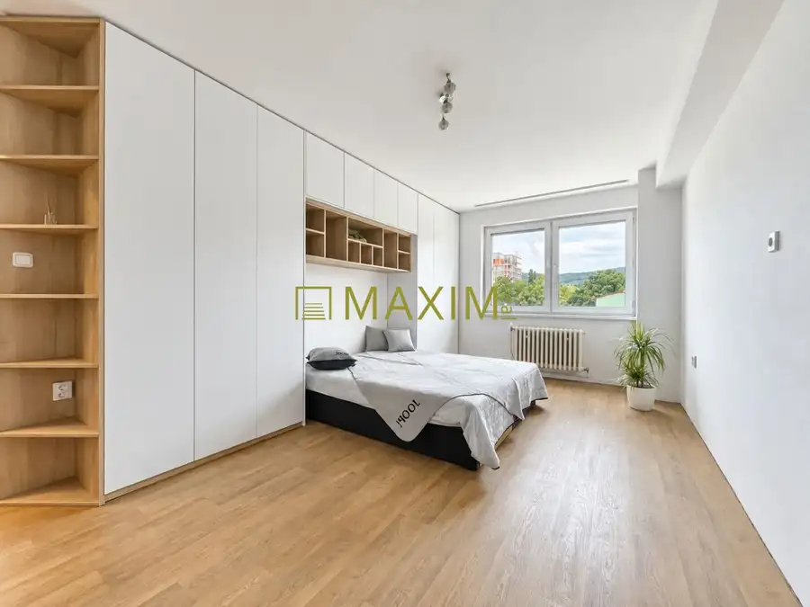
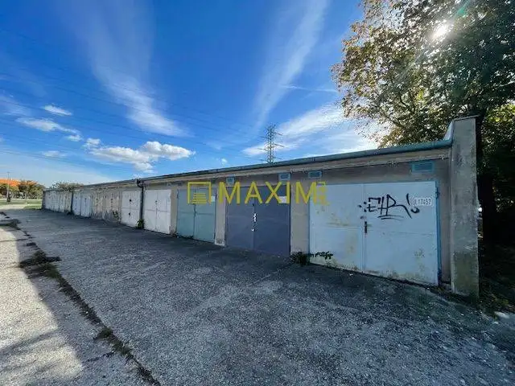
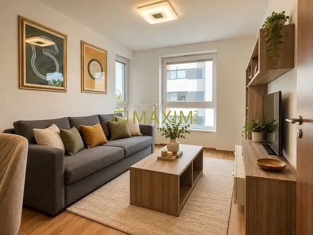

TOP 2-izbový byt s balkónom v projekte Tammi
Dúbravka, Bratislava
- Dispozícia2-izbový
- Plocha59.25 m²
- Poschodie2. z 6
- StavNovostavba
- VlastníctvoOsobné
- Energetická triedaA
O nehnuteľnosti
Bývanie, do ktorého sa stačí nasťahovať, moderný 2-izbový byt s balkónom, garážovým státím a pivnicou v projekte TAMMI, na skok od prírody, v krásnom prostredí Malých Karpát. Projekt bol postavený oceňovaným developerom YIT.Sú miesta, kde sa človek cíti doma hneď po otvorení dverí. Takýto je aj tento 2-izbový byt v modernom rezidenčnom projekte TAMMI na ulici Pri Hrubej lúke v Dúbravke. Novostavba z roku 2018, premyslená dispozícia, dostatok úložného priestoru, vďaka šatníku, balkón, pivnica a vlastné parkovacie státie vytvárajú bývanie, ktoré je ideálne pre pár alebo mladú rodinku s dieťatkom. Denná časť je otočená na juh, takže obývacia izba je presvetlená počas celého dňa a spálňa orientovaná na sever ponúka pokojné prostredie a príjemnú teplotu na kvalitný spánok. Na poschodí sa nachádzajú 3 byty. Dispozícia: vstupná chodba 5,62 m2, obývačka spojená s kuchyňou 23,44 m2, spálňa 13,16 m2, kúpeľňa s WC 5,08 m2, samostatný šatník 4,27 m2, balkón 3 m2. Byt sa predáva zariadený - kuchynská linka so spotrebičmi, jedálenský stôl so stoličkami, konferenčný stolík, stolík pod TV, skrinky v predsieni, policová zostava v šatníku, manželská posteľ, práčka. Optický internet je samozrejmosťou. Bez sedacej súpravy v obývačke. Výmera: úžitková plocha 59,25 m2. Byt 51,57 m2 + balkón 3 m2 + pivnica 4,68 m2 + garážové parkovacie státie 11,87 m2. Mesačné náklady na 2 osoby: správa 95 eur, spoločné priestory 13 eur, elektrina cca 40 eur. K spoločným priestorom, ktoré môžu využívať majitelia bytového domu patrí spoločenská miestnosť na organizovanie párty, miestnosť na umývanie bicyklov a sauna.Projekt TAMMI oceňujú obyvatelia kvôli pokojnému prostrediu, množstvu zelene, výbornej občianskej vybavenosti a dostupnosti do centra. V pešej vzdialenosti nájdete obchody a služby, kaviarne, školy, škôlky, nákupné centrum Bory Mall, MHD a rôzne športoviská. Pár minút od domu sa začínajú lesy Malých Karpát s cyklotrasami a turistickými chodníkmi. Cena bytu vrátane pivnice je 255.000,- eur + provízia RK 5.000,- eur. K bytu je možné dokúpiť parkovacie miesto v hodnote 20.000,- eur.Viac informácií: Mgr. Kotlebová, kotlebova@maximreal.sk, 0949 702 208
Parametre
| Cellar area | 4 m² |
|---|---|
| Cena vrátane energií | Nie |
| Druh | 2 izbový byt |
| Dátum zverejnenia | 2. 10. 2026 |
| Energetický certifikát budovy | A |
| Orientácia | Južná |
| Plocha balkónu v m2 | 3 m² |
| Podlažie | 2 |
| Počet izieb / miestností | 2 |
| Počet nadzemných podlaží | 6 |
| Rok výstavby | 2018 |
| Stav nehnuteľnosti | Novostavba |
| Telekomunikácie | Optická sieť, Káblová TV |
| Typ | Predaj |
| Typ konštrukcie | Iná |
| Umiestnenie | Ďalšie nadzemné podlažie |
| Vlastníctvo | Osobné |
| Vybavenie | Balkón, Pivnica, Výťah |
| Zariadenie | Zariadené kompletne |
| Úžitková plocha | 59.25 m² |
Kde to je


Mohlo by Vás zaujímať

BytNové10 274 900 €TOP Veľký rodinný 3-izbový byt s vlastným kúrením, loggiou, parkovaním Nové Mesto, Bratislava 3-izbový80.22 m²3. podlažie Ponúkame na predaj slnečný 3-izbový byt na Nobelovej ulici v Bratislave s výhľadom na Karpaty. PRIESTOR, KTORÝ RODINA NAOZAJ VYUŽIJEVeľkou prednosťou…
Komerčné priestoryNové6 38 300 €Garáž s nabíjaním pre elektromobil a montážnou jamou na Astronomickej Ružinov, Bratislava 17 m² Ponúkame na predaj garáž s nabíjaním pre elektromobil a montážnou jamou na Astronomickej ulici v Ružinove.Vynikajúca investičná príležitosť, ako aj…
BytNové10 245 000 €Kvalitne zariadený 2-izbový byt s loggiou, pivnič. kobkou, parkovaním Petržalka, Bratislava 2-izbový41 m²4. podlažie Ponúkame na predaj výnimočný 2-izbový byt na Muchovom námestí v Bratislave - Petržalke. Byt, ktorý bol zariadený na bývanie, nie na investíciu alebo…